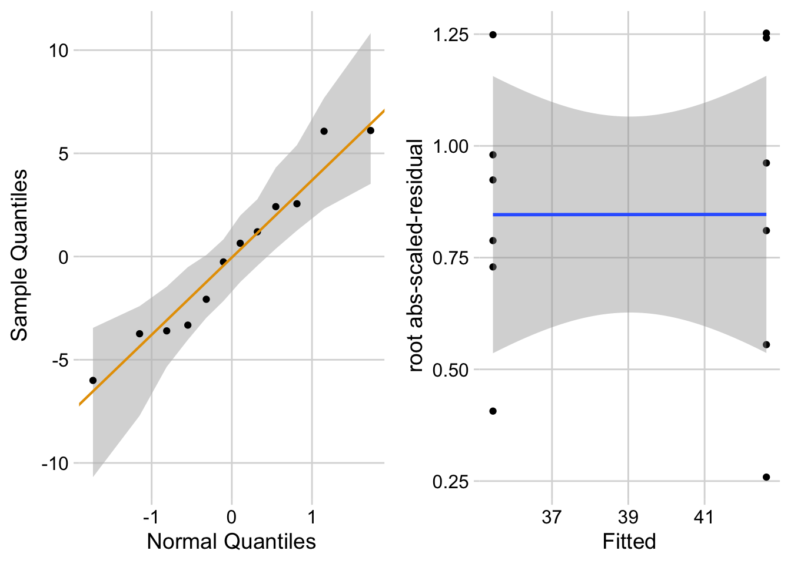
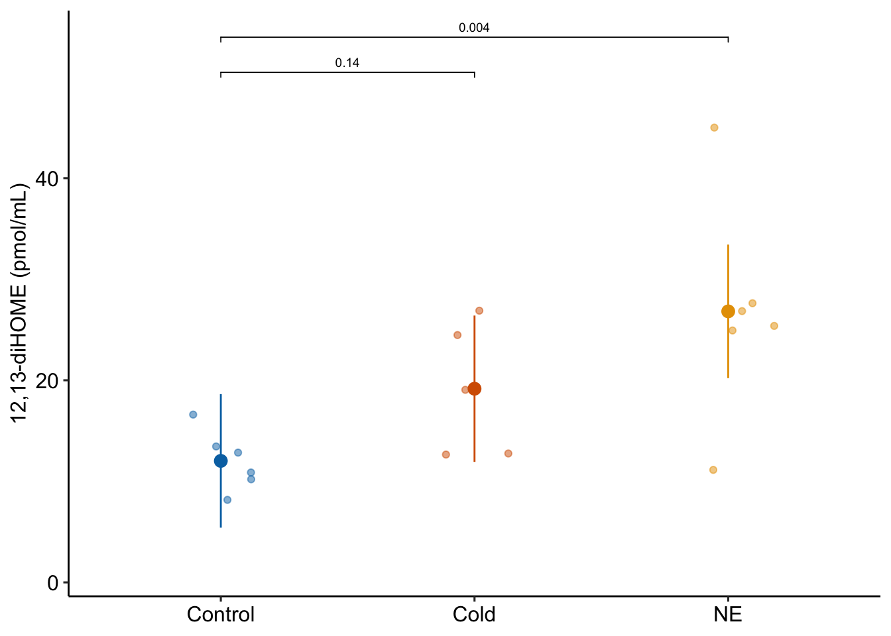
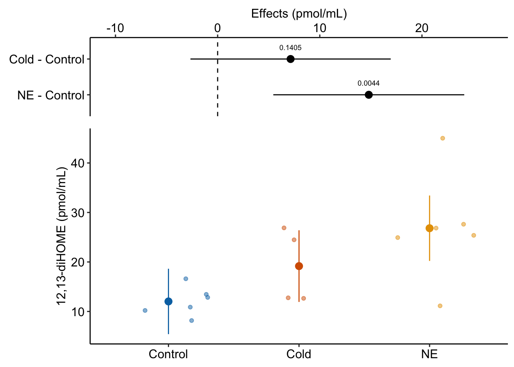

ggstripchart(data = fig3d,
x = "treatment",
y = "serum_tg",
add = c("mean_sd")
)
In the traditional hypothesis-testing strategy, researchers use a t-test if the factor variable has only two groups, or an ANOVA followed by post-hoc tests if the factor variable has more than two groups. In the linear-modeling strategy, we fit the same model, regardless of the number of groups.
To introduce a linear model with a single factor (categorical \(X\) variable), I’ll use data from a set of experiments designed to measure the effect of the lipid 12,13-diHOME on brown adipose tissue (BAT) thermoregulation and the mechanism of this effect.
Download the source data files and move to a new folder named “The cold-induced lipokine 12,13-diHOME promotes fatty acid transport into brown adipose tissue”.
Cold temperature and the neurotransmitter/hormone norepinephrine are known to stimulate increased thermogenesis in BAT cells. In this project, the researchers probed the question “what is the pathway that mediates the effect of cold-exposure on BAT thermogenesis?”. In the “discovery” component of this project, the researchers measured plasma levels of 88 lipids with known signaling properties in humans exposed to one hour of both normal (20 °C) and cold temperature (14 °C) temperature. Of the 88 lipids, 12,13-diHOME had the largest response to the cold treatment. The researchers followed this up with experiments on mice.
Let’s start with the experiment in Figure 3d, which was designed to measure the effect of 12,13-diHOME on plasma triglyceride level. If 12,13-diHOME stimulates BAT activity, then levels in the 12,13-diHOME mice should be less than levels in the control mice.
Design: single, categorical X
Response variable: \(\texttt{serum\_tg}\), A measure of serum triglycerides (mg/dl). \(\texttt{serum\_tg}\) is a continuous variable.
Factor variable: \(\texttt{treatment}\), with levels:
Contrasts of interest
12,13-diHOME - Vehicle. Estimates the effect of 12,13-diHOME treatment. This is the focal contrast (and the only contrast).
Open the data and, if necessary, wrangle into an analyzable format. The script to import these data is in the section Hidden code below.
The second step is to examine the data to
ggstripchart(data = fig3d,
x = "treatment",
y = "serum_tg",
add = c("mean_sd")
)
There are no obviously implausible data points. A normal distribution model is a good, reasonable start. This can be checked more thoroughly after fitting the model.
fig3d_m1 <- lm(serum_tg ~ treatment, data = fig3d)set.seed(1)
# qqPlot(fig3d_m1, id=FALSE)
# spreadLevelPlot(fig3d_m1, id=FALSE)
ggcheck_the_model(fig3d_m1)
The Q-Q plot indicates that the distribution of residuals is well within that expected for a normal sample and there is no cause for concern with inference. The spread-location plot shows no conspicuous trend in how the spread changes with the conditonal mean. There is no cause for concern with inference.
Write something like this in your .Rmd file following the model check code chunk:
“The residuals are well within the range expected from sampling from a Normal distribution. The heterogeneity of the residuals is well within the range expected from sampling from a single distribution.”
fig3d_m1_coef <- cbind(coef(summary(fig3d_m1)),
confint(fig3d_m1))
colnames(fig3d_m1_coef)[4] <- "p value"
kable(fig3d_m1_coef,
digits = c(1,2,1,4,1,1)) |>
kable_styling()| Estimate | Std. Error | t value | p value | 2.5 % | 97.5 % | |
|---|---|---|---|---|---|---|
| (Intercept) | 42.6 | 1.67 | 25.6 | 0.0000 | 38.9 | 46.3 |
| treatment12,13-diHOME | -7.2 | 2.36 | -3.0 | 0.0125 | -12.4 | -1.9 |
fig3d_m1_emm <- emmeans(fig3d_m1, specs = "treatment")
kable(fig3d_m1_emm, digits = c(1,1,2,0,1,1)) |>
kable_styling()| treatment | emmean | SE | df | lower.CL | upper.CL |
|---|---|---|---|---|---|
| Vehicle | 42.6 | 1.67 | 10 | 38.9 | 46.3 |
| 12,13-diHOME | 35.5 | 1.67 | 10 | 31.7 | 39.2 |
fig3d_m1_pairs <- contrast(fig3d_m1_emm,
method = "revpairwise") |>
summary(infer = TRUE)
kable(fig3d_m1_pairs, digits = c(1,1,1,0,1,1,2,4)) |>
kable_styling()| contrast | estimate | SE | df | lower.CL | upper.CL | t.ratio | p.value |
|---|---|---|---|---|---|---|---|
| (12,13-diHOME) - Vehicle | -7.2 | 2.4 | 10 | -12.4 | -1.9 | -3.04 | 0.0125 |
The norm in bench biology research is a response plot.
gg1 <- ggplot_the_response(
fig3d_m1,
fig3d_m1_emm,
fig3d_m1_pairs,
legend_position = "none",
y_label = "Serum TG (µg/dL)",
palette = pal_okabe_ito_blue
)
gg1
If the researchers want to explicitly communicate more about the treatment effect, then they should “plot the model”.
gg2 <- ggplot_the_model(
fig3d_m1,
fig3d_m1_emm,
fig3d_m1_pairs,
legend_position = "none",
y_label = "Serum TG (µg/dL)",
effect_label = "Effects (µg/dL)",
palette = pal_okabe_ito_blue,
rel_heights = c(0.5,1)
)
gg2
Why this is problematic: Significance applies to a p-value and not the effect. In English usage, “significant” means “large” or “important” and the p-value is not good evidence for either the size of an effect or the importance of an effect (see the p-value chapter). We interpret the size of effect from the estimated effect size and CI and the importance of an effect from knowledge of the physiological consequences of TG reduction over the range of the CI.
The variable \(\texttt{treatment}\) in the Figure 3d mouse experiment, is a single, categorical \(X\) variable. In a linear model, categorical variables are called factors. \(\texttt{treatment}\) can take two different values, “Vehicle” and “12,13-diHOME”. The different values in a factor are the factor levels (or just “levels”). “Levels” is a strange usage of this word; a less formal name for levels is “groups”. In a Nominal categorical factor, the levels have no units and are unordered, even if the variable is based on a numeric measurement. For example, I might design an experiment in which mice are randomly assigned to one of three treatments: one hour at 14 °C, one hour at 18 °C, or one hour at 26 °C. If I model this treatment as a nominal categorical factor, then I simply have three levels. While I would certainly choose to arrange these levels in a meaningful way in a plot, for the analysis itself, these levels have no units and there is no order. Ordinal categorical factors have levels that are ordered but there is no information on relative distance. The treatment at 18 °C is not more similar to 14 °C than to 26 °C. Nominal categorical factors is the default in R and how all factors are analyzed in this text.
The linear model fit to the serum TG data is
\[ \begin{align} serum\_tg &= \beta_0 + \beta_1 treatment_{12,13-diHOME} + \varepsilon\\ \varepsilon &\sim N(0, \sigma^2) \end{align} \tag{10.1}\]
Model Equation 10.1 is a regression model where \(treatment_{12,13-diHOME}\) is not the variable \(\texttt{treatment}\), containing the words “Vehicle” or “12,13-diHOME” but a numeric variable that indicates membership in the group “12,13-diHOME”. This variable contains the number 1 if the mouse belongs to “12,13-diHOME” and the number 0 if the mouse doesn’t belong to “12,13-diHOME”. \(treatment_{12,13-diHOME}\) is known as an indicator variable because it indicates group membership. There are several ways of coding indicator variables and the way described here is called dummy or treatment coding. Dummy-coded indicator variables are sometimes called dummy variables.
The lm function creates indicator variables under the table, in something called the model matrix.
X <- model.matrix(~ treatment, data = fig3d)
N <- nrow(X)
X[1:N,] (Intercept) treatment12,13-diHOME
1 1 0
2 1 0
3 1 0
4 1 0
5 1 0
6 1 0
7 1 1
8 1 1
9 1 1
10 1 1
11 1 1
12 1 1The columns of the model matrix are the names of the model terms in the fit model. R names dummy variables by combining the names of the factor and the name of the level within the factor. So the \(X\) variable that R creates in the model matrix for the fit linear model in model Equation 10.1 is \(treatment12,13-diHOME\). You can see these names as terms in the coefficient table of the fit model.
You should prove to yourself that lm fits the regression model serum_tg ~ X where X is the model matrix.
m1 <- lm(serum_tg ~ treatment, data = fig3d)
coef(summary(m1)) Estimate Std. Error t value Pr(>|t|)
(Intercept) 42.620042 1.667226 25.563447 1.926081e-10
treatment12,13-diHOME -7.167711 2.357813 -3.039982 1.246296e-02X <- model.matrix(~ treatment, data = fig3d)
m2 <- lm(serum_tg ~ X, data = fig3d)
coef(summary(m2)) Estimate Std. Error t value Pr(>|t|)
(Intercept) 42.620042 1.667226 25.563447 1.926081e-10
Xtreatment12,13-diHOME -7.167711 2.357813 -3.039982 1.246296e-02There are alternatives to dummy coding for creating indicator variables. Dummy coding is the default in R and it makes sense when thinking about experimental data with an obvious control level. I also like the interpretation of a “interaction effect” using Dummy coding. The classical coding for ANOVA is deviation effect coding, which creates coefficients that are deviations from the grand mean. In contrast to R, Deviation coding is the default in many statistical software packages including SAS, SPSS, and JMP. The method of coding can make a difference in an ANOVA table. Watch out for this – I’ve found several published papers where the researchers used the default dummy coding but interpreted the ANOVA table as if they had used deviation coding. This is both getting ahead of ourselves and somewhat moot, because I don’t advocate reporting ANOVA tables.
Recall from stats 101 that the slope of \(X\) in the model \(Y = b_0 + b_1 X\) is \(b_1 = \frac{\textrm{COV}(X,Y)}{\textrm{VAR}(X)}\). This can be generalized using the equation
\[ \mathbf{b} = (\mathbf{X}^\top \mathbf{X})^{-1} \mathbf{X}^\top \mathbf{y} \]
where \(\mathbf{X}\) is the model matrix containing a column for an intercept, columns for all indicator variables, and columns for all numeric covariates. \(\mathbf{b}\) is a vector containing the model coefficients, including the intercept in the first element. The first part of the RHS (\(\mathbf{X}^\top \mathbf{X}\)) is a matrix of the “sums of squares and cross-products” of the columns of \(\mathbf{X}\). Dividing each element of this matrix by \(N-1\) gives us the covariance matrix of the \(\mathbf{X}\), which contains the variances of the \(X\) columns along the diagonal, so this component has the role of the denominator in the stats 101 equation. Matrix algebra doesn’t do division, so the inverse of this matrix is multiplied by the second part. The second part or the RHS (\(\mathbf{X}^\top \mathbf{y}\)) is a vector containing the cross-products of each column of \(\mathbf{X}\) with \(\mathbf{y}\). Dividing each element of this vector by \(N-1\) gives us the covariances of each \(X\) with \(y\), so this component has the role of the numerator in the stats 101 equation.
| Estimate | Std. Error | t value | p value | 2.5 % | 97.5 % | |
|---|---|---|---|---|---|---|
| (Intercept) | 42.6 | 1.67 | 25.6 | 0.0000 | 38.9 | 46.3 |
| treatment12,13-diHOME | -7.2 | 2.36 | -3.0 | 0.0125 | -12.4 | -1.9 |
The row names of the coefficient table are the column names of the model matrix. These are the model terms. There are two terms (two rows) because there are two parameters in the regression model Equation 10.1. The values in the column \(\texttt{Estimate}\) in the coefficient table are the estimates of the regression parameters \(\beta_0\) and \(\beta_1\). These estimates are the coefficients of the fit model, \(b_0\) and \(b_1\).
| coefficient | parameter | model term | interpretation |
|---|---|---|---|
| \(b_0\) | \(\beta_0\) | (Intercept) | \(\overline{Vehicle}\) |
| \(b_1\) | \(\beta_1\) | treatment12,13-diHOME | \(\overline{12,13\;diHOME} - \overline{Vehicle}\) |
.
It is important to understand the interpretation of the coefficients of the fit linear model Equation 10.1 ( Table 10.1).
\[ \mathrm{E}[serum\_tg|treatment = \texttt{"12,13-diHOME"}] - \mathrm{E}[serum\_tg|treatment = \texttt{"Vehicle"}] \]
Because there are no additional covariates in model, this difference is equal to the difference between the sample means \(\bar{Y}_{12,13-diHOME} - \bar{Y}_{Vehicle}\). The direction of this difference is important – it is non-reference level minus the reference level.
The estimate \(b_1\) is the effect that we are interested in. Specifically, it is the measured effect of 12,13-diHOME on serum TG. When we inject 12,13-diHOME, we find the mean serum TG decreased by -7.2 µg/dL relative to the mean serum TG in the mice that were injected with saline. Importantly, the reference level is not a property of an experiment but is set by whomever is analyzing the data. Since the non-reference estimates are differences in means, it often makes sense to set the “control” treatment level as the reference level.
Many beginners mistakenly memorize the coefficient \(b_1\) to equal the mean of the non-reference group (“12,13-diHOME”). Don’t do this. In a regression model, only \(b_0\) is a mean. The coefficient \(b_1\) in model Equation 10.1 is a difference in means.

A geometric interpretation of the coefficients is illustrated in Figure Figure 10.3. \(b_0\) is the conditional mean of the reference level (“Vehicle”) and is an estimate of \(\beta_0\), the true, conditional mean of the population. \(b_1\) is the difference in the conditional means of the first non-reference level (“12,13-diHOME”) and the reference level (“Vehicle”) and is an estimate of \(\beta_1\), the true difference in the conditional means of the population with and without the treatment 12,13-diHOME.
fig3d_m1_coef|>
kable(digits = c(1,2,1,4,1,1)) |>
kable_styling()| Estimate | Std. Error | t value | p value | 2.5 % | 97.5 % | |
|---|---|---|---|---|---|---|
| (Intercept) | 42.6 | 1.67 | 25.6 | 0.0000 | 38.9 | 46.3 |
| treatment12,13-diHOME | -7.2 | 2.36 | -3.0 | 0.0125 | -12.4 | -1.9 |
| treatment | emmean | SE | df | lower.CL | upper.CL |
|---|---|---|---|---|---|
| Vehicle | 42.6 | 1.67 | 10 | 38.9 | 46.3 |
| 12,13-diHOME | 35.5 | 1.67 | 10 | 31.7 | 39.2 |
The table of marginal means of a fit model gives the **modeled* mean, standard error and confidence interval for all specified groups. We use these modeled means, SEs, and CIs, for the response plot. Note that here is no test-statistic with a p-value because there is no significance test.
emmeans function (“em” is the abbreviation for “estimated marginal”).A marginal mean is the mean over a set of conditional means. For example, if a treatment factor has three levels, the conditional means are the means for each level and the marginal mean is the mean of the three means. Or, if the conditional means are the expected values given a continous covariate, the marginal mean is the expected value at the mean of covariate. The specified emmeans table of the fig3d data is not too exciting because it simply contains the conditional means – the values are not marginalized over any \(X\). Because the emmeans table contains different sorts of means (conditional, marginal, adjusted), this text will generally refer to the means in this table as “modeled means”
It is exceptionally important to understand the difference between the means, SEs, and CIs in the emmeans table and the statistics of the same name in a summary table of the data.
The emmeans table and a summary statistics table show different statistics – this is important to know for plotting.
| treatment | mean | SE | lower.CL | upper.CL |
|---|---|---|---|---|
| Vehicle | 42.62004 | 1.77325 | 38.66899 | 46.57109 |
| 12,13-diHOME | 35.45233 | 1.55398 | 31.98984 | 38.91482 |
| treatment | emmean | SE | df | lower.CL | upper.CL |
|---|---|---|---|---|---|
| Vehicle | 42.62004 | 1.66723 | 10 | 38.90523 | 46.33485 |
| 12,13-diHOME | 35.45233 | 1.66723 | 10 | 31.73752 | 39.16714 |
The top table is the summary statistics table for fig3d data. The bottom table is a the emmeans table of the fit model (m1). I show both to five decimal places for comparison of the values.
It may seem odd to use a common standard deviation in the computation of the modeled SEs. It is not. Remember that an assumption of the linear model is homogeneity of variances – that all residuals \(e_i\) are drawn from the same distribution (\(N(0, \sigma^2)\)) (a “single hat”) regardless of group. The model standard deviation \(\hat{\sigma}\) is the estimate of the square root of the variance of this distribution. Given this interpretation, it is useful to think of each sample standard deviation as an estimate of \(\sigma\) (the linear model assumes that all differences among the sample standard deviations are due entirely to sampling). The model standard deviation is a more precise estimate of \(\sigma\) since it is computed from a larger sample (all \(N\) residuals).
The model standard deviation is called the “pooled” standard deviation in the ANOVA literature and is computed as a sample-size weighted average of the sample standard deviations.
The modeled standard error of the mean uses the estimate of \(\sigma\) from the fit model. This estimate is
\[\begin{equation} \hat{\sigma} = \sqrt{\frac{\sum{(y_i - \hat{y}_i)^2}}{df}} \end{equation}\]
Create a code chunk that computes this. Recall that \((y_i - \hat{y}_i)\) is the set of residuals from the model, which can be extracted using residuals(fit) where “fit” is the fit model object. \(df\) is the model degrees of freedom, which is \(N-k\), where \(N\) is the total sample size and \(k\) is the number of parameters that are fit. This makes sense – for the sample variance there is one parameter that is fit, the mean of the group, so the denominator is \(n - 1\). In model fig3d_m1, there are two parameters that are fit, the intercept and the coefficient of treatment12,13-diHOME, so the denominator is \(N - 2\) where \(N\) is the total sample size (the sum of the \(n\) for each treatment level).
| contrast | estimate | SE | df | lower.CL | upper.CL | t.ratio | p.value |
|---|---|---|---|---|---|---|---|
| (12,13-diHOME) - Vehicle | -7.2 | 2.36 | 10 | -12.4 | -1.9 | -3 | 0.012 |
Compare
coefficient table:
m1 <- lm(serum_tg ~ treatment, data = fig3d)
coef(summary(m1)) |>
kable() |>
kable_styling()| Estimate | Std. Error | t value | Pr(>|t|) | |
|---|---|---|---|---|
| (Intercept) | 42.62004 | 1.667226 | 25.563447 | 0.000000 |
| treatment12,13-diHOME | -7.16771 | 2.357813 | -3.039982 | 0.012463 |
contrast table:
emmeans(m1, specs = "treatment") |>
contrast(method = "revpairwise") |>
kable() |>
kable_styling()| contrast | estimate | SE | df | t.ratio | p.value |
|---|---|---|---|---|---|
| (12,13-diHOME) - Vehicle | -7.16771 | 2.357813 | 10 | -3.039982 | 0.012463 |
t-test:
m2 <- t.test(fig3d[treatment == "12,13-diHOME", serum_tg],
fig3d[treatment == "Vehicle", serum_tg],
var.equal = TRUE)
broom::glance(m2) |> # glance is from the broom package
kable() |>
kable_styling()| estimate | estimate1 | estimate2 | statistic | p.value | parameter | conf.low | conf.high | method | alternative |
|---|---|---|---|---|---|---|---|---|---|
| -7.16771 | 35.45233 | 42.62004 | -3.039982 | 0.012463 | 10 | -12.42125 | -1.914175 | Two Sample t-test | two.sided |
Notes
t.test in R is the Welch t-test for heterogenous variance. To compute the Student t-test, use var.equal = TRUE.The t and p values for the t-test are the same as those for the linear model, because the t-test is a specific case of the linear model. Reasons to abandon classic t-tests and learn the linear modeling strategy include
There is rarely a reason to ever use the t.test() function. Throw the function away. Ignore web pages that teach you to use it. The t-test is easy to learn, which encourages its overuse. If your only tool is a t-test, every problem looks like a comparison between two-means.
The data come from the experiment reported in Figure 2a of the 12,13-diHOME article described above. This experiment was designed to probe the hypothesis that 12,13-diHOME is a mediator of known stimulators of increased BAT activity (exposure to cold temperature and sympathetic nervous system activation). Mice were assigned to control (30 °C), one-hour exposure to 4 °C, or 30 minute norepinephrine (NE) treatment level (NE is the neurotransmitter of the sympathetic neurons targeting peripheral tissues).
design: single, categorical X with three levels.
response variable: \(\texttt{diHOME}\), the serum concentration of 12,13-diHOME. a continuous variable.
factor variable: \(\texttt{treatment}\), with levels:
planned contrasts
The contrast Cold - NE is not of interest.
fig2a_m1 <- lm(diHOME ~ treatment, data = fig2a)set.seed(1)
ggcheck_the_model(fig2a_m1)Warning in rlm.default(x, y, weights, method = method, wt.method = wt.method, :
'rlm' failed to converge in 20 steps`geom_smooth()` using formula = 'y ~ x'
The Q-Q plot indicates that the distribution of residuals is within that expected for a normal sample. The spread-location plot shows no conspicuous trend in how the spread changes with the conditonal mean. There is little cause for concern with inference from a linear model.
Write something like this in your .Rmd file following the model check code chunk:
“The residuals are within the range expected from sampling from a Normal distribution. The heterogeneity of the residuals is well within the range expected from sampling from a single distribution.”
fig2a_m1_coef <- cbind(coef(summary(fig2a_m1)),
confint(fig2a_m1))
fig2a_m1_coef|>
kable(digits = c(1,2,1,4,1,1)) |>
kable_styling()| Estimate | Std. Error | t value | Pr(>|t|) | 2.5 % | 97.5 % | |
|---|---|---|---|---|---|---|
| (Intercept) | 12.0 | 3.08 | 3.9 | 0.0016 | 5.4 | 18.6 |
| treatmentCold | 7.1 | 4.57 | 1.6 | 0.1405 | -2.7 | 16.9 |
| treatmentNE | 14.8 | 4.36 | 3.4 | 0.0044 | 5.4 | 24.1 |
fig2a_m1_emm <- emmeans(fig2a_m1, specs = "treatment")
fig2a_m1_emm|>
kable(digits = c(1,1,2,0,1,1)) |>
kable_styling()| treatment | emmean | SE | df | lower.CL | upper.CL |
|---|---|---|---|---|---|
| Control | 12.0 | 3.08 | 14 | 5.4 | 18.6 |
| Cold | 19.2 | 3.38 | 14 | 11.9 | 26.4 |
| NE | 26.8 | 3.08 | 14 | 20.2 | 33.4 |
fig2a_m1_planned <- contrast(fig2a_m1_emm,
method = "trt.vs.ctrl",
adjust = "none",
level = 0.95) |>
summary(infer = TRUE)
fig2a_m1_planned|>
kable(digits = c(1,1,1,0,1,1,2,4)) |>
kable_styling()| contrast | estimate | SE | df | lower.CL | upper.CL | t.ratio | p.value |
|---|---|---|---|---|---|---|---|
| Cold - Control | 7.1 | 4.6 | 14 | -2.7 | 16.9 | 1.56 | 0.1405 |
| NE - Control | 14.8 | 4.4 | 14 | 5.4 | 24.1 | 3.40 | 0.0044 |
The usual response plot…
ggplot_the_response(
fig2a_m1,
fig2a_m1_emm,
fig2a_m1_planned,
legend_position = "none",
y_label = "12,13-diHOME (pmol/mL)",
palette = pal_okabe_ito_blue
)
Or, if we want to emphasize the effect…
ggplot_the_model(
fig2a_m1,
fig2a_m1_emm,
fig2a_m1_planned,
legend_position = "none",
y_label = "12,13-diHOME (pmol/mL)",
effect_label = "Effects (pmol/mL)",
palette = pal_okabe_ito_blue,
rel_heights = c(0.5,1)
)
The first statement makes the definitive claim that NE causes the increase but there is not unreasonable probability of this magnitude of effect occurring by random sampling. In addition the experiment could be infected by experiment implementation decisions that make this p-value unreliable. The second statement makes a tentative claim. The third statement adds the statistics that provide the evidence for the tentative claim. The statistics could be moved to some combination of the figure, the figure caption, and a supplement.
Why the first statement is problematic: Significance applies to a p-value and not the effect. In English usage, “significant” means “large” or “important” and the p-value is not good evidence for either the size of an effect or the importance of an effect (see the p-value chapter). We interpret the size of effect from the estimated effect size and CI and the importance of an effect from knowledge of the physiological consequences of TG reduction over the range of the CI.
Why the second statement is problematic: p > 0.05, or a high p-value more generally, is not evidence of no effect because a p-value (or 1 - p) does not give the probability that a treatment effect is zero. One could use an equivalence test to give [the probability that an effect is less than some physiologically meaningful magnitude][https://journals.sagepub.com/doi/abs/10.1177/1948550617697177]
The fit regression model for the data in Figure 2a is
\[\begin{equation} diHOME_i = b_0 + b_1 treatment_{Cold,i} + b_2 treatment_{NE,i} + e_i (\#eq:fit-dihome) \end{equation}\]
The coefficients of the model are in the \(\texttt{Estimate}\) column of the coefficient table.
| Estimate | Std. Error | t value | Pr(>|t|) | 2.5 % | 97.5 % | |
|---|---|---|---|---|---|---|
| (Intercept) | 12.0 | 3.1 | 3.9 | 0 | 5.4 | 18.6 |
| treatmentCold | 7.1 | 4.6 | 1.6 | 0 | -2.7 | 16.9 |
| treatmentNE | 14.8 | 4.4 | 3.4 | 0 | 5.4 | 24.1 |
Again – Do not make the mistake in thinking that the values in \(\texttt{Estimate}\) for the \(\texttt{treatmentCold}\) and \(\texttt{treatmentNE}\) rows are the means of the “Cold” and “NE” groups. These coefficients are differences in means. And, to emphasize further understanding of these coefficients, both \(b_1\) and \(b_2\) are “slopes”. Don’t visualize this as a single line from the control mean through both non-control means. Slopes is plural – there are two regression lines. \(b_1\) is the slope of the line from the control mean to the “Cold” mean while \(b_2\) is the slope of the line from the control mean to the “NE” mean. The numerator of each slope is the difference between that group’s mean and the control mean. The denominator of each slope is 1 (because each has the value 1 when the row is assigned to that group).
Two understand the names of the model terms, it’s useful to recall the order of the factor levels of \(\texttt{treatment}\), which is
levels(fig2a$treatment) [1] "Control" "Cold" "NE" Given this ordering, the lm function creates a regression model with an intercept column for the “Control” group (because the first group in the list is the reference level), an indicator variable for the “Cold” group called treatmentCold, and an indicator variable for the “NE” group called treatmentNE. We can see these model names by peeking at the model matrix of the fit model
fig2a_m1_X <- model.matrix(fig2a_m1)
head(fig2a_m1_X) (Intercept) treatmentCold treatmentNE
1 1 0 0
2 1 1 0
3 1 0 1
4 1 0 0
5 1 1 0
6 1 0 1The column \(\texttt{treatmentCold}\) is a dummy-coded indicator variable containing the number 1, if the individual is in the “Cold” group, or the number 0, otherwise. The column \(\texttt{treatmentNE}\) is a dummy-coded indicator variable containing the number 1, if the individual is in the “NE” group, or the number 0, otherwise.
The model coefficients, parameters, model term, and interpretation are summarized in the following table.
| coefficient | parameter | model term | interpretation |
|---|---|---|---|
| $b_0$ | $\beta_0$ | (Intercept) | $\overline{Control}$ |
| $b_1$ | $\beta_1$ | treatmentCold | $\overline{1\;hour\;cold} - \overline{Control}$ |
| $b_2$ | $\beta_2$ | treatmentNE | $\overline{30\;min\;NE} - \overline{Control}$ |
| treatment | emmean | SE | df | lower.CL | upper.CL |
|---|---|---|---|---|---|
| Control | 12.0 | 3.08 | 14 | 5.4 | 18.6 |
| Cold | 19.2 | 3.38 | 14 | 11.9 | 26.4 |
| NE | 26.8 | 3.08 | 14 | 20.2 | 33.4 |
This table is important for reporting means and CIs and for plotting the model. As in example 1, the modeled means in the column “emmean” are the sample means of each group (what you would compute if you simply computed the mean for that group). Again, this is true for this model, but is not generally true.
And again, as in example 1, the SE for each mean is not the sample SE but the modeled SE – the numerator is the estimate of \(\sigma\) from the fit model, which includes residuals from all groups combined. These are the SEs that you should report because it is these SEs that are used to compute the p-value and CI that you report, that is, they tell the same “story”. The SE for the “Cold” group is a bit higher because the sample size \(n\) for this group is smaller by 1.
| contrast | estimate | SE | df | lower.CL | upper.CL | t.ratio | p.value |
|---|---|---|---|---|---|---|---|
| Cold - Control | 7.1 | 4.57 | 14 | -2.7 | 16.9 | 1.6 | 0.1405 |
| NE - Control | 14.8 | 4.36 | 14 | 5.4 | 24.1 | 3.4 | 0.0044 |
fig2a_m1_pairs <- contrast(fig2a_m1_emm,
method = "revpairwise",
adjust = "none") |>
summary(infer = TRUE)The chunk above computes a contrast table that includes comparisons of all pairs of groups in the factor \(\texttt{treatment}\) (this adds a 3rd comparison to the contrast table of planned comparisons above). The t-tests for the contrasts are derived from a single fit linear model.
In contrast to the analysis in the chunk above, researchers commonly fit separate t-tests for each pair of treatment levels.
# classic t-test
test1 <- t.test(fig2a[treatment == "Cold", diHOME],
fig2a[treatment == "Control", diHOME],
var.equal = TRUE)
test2 <- t.test(fig2a[treatment == "NE", diHOME],
fig2a[treatment == "Control", diHOME],
var.equal = TRUE)
test3 <- t.test(fig2a[treatment == "NE", diHOME],
fig2a[treatment == "Cold", diHOME],
var.equal = TRUE)Notes
var.equal = TRUEt.test output, type “test1” into the console.Compare the t and p values from the three independent tests with the t and p-values from the single linear model.
| contrast | t (lm) | p (lm) | t (t-test) | p (t-test) |
|---|---|---|---|---|
| Cold - Control | 1.562324 | 0.1405278 | 2.415122 | 0.0389207 |
| NE - Cold | 1.674696 | 0.1161773 | 1.380666 | 0.2007006 |
| NE - Control | 3.395015 | 0.0043559 | 3.238158 | 0.0088971 |
The t and p-values computed from three separate tests differ from the t and p-values computed from the single linear model shown in the contrasts table above. The values differ because the SE in the denominators used to compute the \(t\)-values differ. The linear model uses the same value of \(\sigma\) to compute the SED (the denominator of t) for all three t-tests in the contrast table. Each separate t-test uses a different value of \(\sigma\) to compute the SED. Which is correct? Neither – they simply make different assumptions about the data generating model.
Multiple testing is the practice of adjusting p-values and confidence intervals to account for the expected increase in the frequency of Type I error in a batch, or family, of tests. Multiple testing is a concept that exists because of Neyman-Pearson hypothesis testing strategy. If multiple tests are used to answer the same question then, these are in the same family. Issues surrounding multiple testing are fleshed out in more detail in Chapter xxx “Best Practices”. Computing adjusted values is covered below in the “Working in R” section.
m1 <- lm(diHOME ~ treatment, data = fig2a)diHOME ~ treatment and the data object fig2a.y ~ x. I read this as “y as a function of x” but say “y squiggly x” when I’m speaking it out loud. y is the response variable diHome. Here, x is the factor treatment.y and x parts of the model formula will always be the names of columns of data in the data object. But, either or both can be vectors or matrices that are not in a data.table (or other kind of data object).treatment was specifically coded as a factor variable in the import and wrangle chunk above and R will automatically create the correct indicator variables.This book emphasizes ordering our factor levels in order to contro
To understand this better, peek at the ordering of the levels of treatment
levels(fig2a$treatment)[1] "Control" "Cold" "NE" treatment_order <- c("Control", "Cold", "NE")
fig2a[, treatment := factor(treatment,
levels = treatment_order)] # order levelstreatment_order.The default ordering for a factor is alphabetical, so the default order for fig2a would be (“Cold”, “Control”, “NE”). This doesn’t change any statistical inference but it will create a plot in which the order of the groups on the horizontal axis is goofy and mindless.
If is common in biostatistics to log transform the response variable (this is common with count measures or things that grow geometrically). One could simply create a log-transformed column of the response variable and then use this log transformed column in the model formula.
fig2a[, diHOME_log := log(diHOME)]A better way to do this is to simply do the transformation in the model formula itself. See the note for why!
m1_log <- lm(log(diHOME) ~ treatment, data = fig2a)
m1_log_emm <- emmeans(m1_log, specs = "treatment")
m1_log_pairs <- contrast(m1_log_emm,
method = "revpairwise") |>
summary(infer = TRUE)
m1_log_pairs contrast estimate SE df lower.CL upper.CL t.ratio p.value
Cold - Control 0.442 0.218 14 -0.129 1.01 2.026 0.1425
NE - Control 0.751 0.208 14 0.206 1.30 3.606 0.0075
NE - Cold 0.309 0.218 14 -0.263 0.88 1.413 0.3612
Results are given on the log (not the response) scale.
Confidence level used: 0.95
Conf-level adjustment: tukey method for comparing a family of 3 estimates
P value adjustment: tukey method for comparing a family of 3 estimates Notes
The emmeans and contrast functions are smart enough to recognize that you have a log transformation in the model formula, so these give you the estimates on the log scale. This means that the contrasts in the estimates column are the differences of the means of the log-transformed variables. And the SE and CIs are on this log scale. 2.
You can see the back-transformed estimates and statistics on the response scale by adding a type = "response argument to the emmeans function.
m1_log <- lm(log(diHOME) ~ treatment, data = fig2a)
m1_log_emm <- emmeans(m1_log,
specs = "treatment",
type = "response")
m1_log_pairs <- contrast(m1_log_emm,
method = "revpairwise") |>
summary(infer = TRUE)
m1_log_pairs contrast ratio SE df lower.CL upper.CL null t.ratio p.value
Cold / Control 1.56 0.340 14 0.879 2.76 1 2.026 0.1425
NE / Control 2.12 0.441 14 1.229 3.65 1 3.606 0.0075
NE / Cold 1.36 0.297 14 0.769 2.41 1 1.413 0.3612
Confidence level used: 0.95
Conf-level adjustment: tukey method for comparing a family of 3 estimates
Intervals are back-transformed from the log scale
P value adjustment: tukey method for comparing a family of 3 estimates
Tests are performed on the log scale Notes
\[ log(\frac{a}{b}) = log(a) - log(b) \]
Sometimes we have a numeric or integer \(X\) variable but want to model this as a categorical factor variable. For example, let’s create fake data with glucose_uptake measured at three different times in each mouse.
fake_data <- data.table(
mouse_id = rep(paste("mouse", 1:6), each = 3),
genotype = rep(c("WT", "KO"), each = 6 * 3),
time = rep(1:3, 6),
glucose_uptake = rnorm(6 * 3)
)In these data, time is a numeric variable. If we want to model time as a factor, we could create a new data column that contains the factor variable
fake_data[, time_fac := factor(time)]
m1_fake <- lm(glucose_uptake ~ genotype * time_fac, data = fake_data)Or we could just change the object time in the model formula
m1_fake <- lm(glucose_uptake ~ genotype * factor(time), data = fake_data)Notes
glucose_uptake ~ genotype * factor(time) + (1 | mouse_id)
but we haven’t gotten to this yet!
Recognize that
glucose_uptake ~ genotype * time
and
glucose_uptake ~ genotype * factor(time)
are two different models! The first models time as a numeric variable while the second models time as a factor variable.
m1 <- lm(diHOME ~ treatment, data = fig2a)
m1_coef <- coef(summary(m1))
# or if we want the CIs of the coefficeints too
m1_coef <- cbind(coef(summary(m1)),
confint(m1))
m1_coef Estimate Std. Error t value Pr(>|t|) 2.5 % 97.5 %
(Intercept) 12.023075 3.081337 3.901902 0.001595771 5.414264 18.63189
treatmentCold 7.140386 4.570362 1.562324 0.140527829 -2.662066 16.94284
treatmentNE 14.794354 4.357669 3.395015 0.004355868 5.448083 24.14063For many table-like objects, I use knitr::kable to print the table with fewer decimal places and kableExtra::kable_styling to make it a little prettier.
# the row names are not part of the m1_coef object
# so there is no digit designation for this column
m1_coef|> # pipe the m1_coef object to kable
kable(digits = c(2,3,3,5,2,2)) |>
kable_styling()| Estimate | Std. Error | t value | Pr(>|t|) | 2.5 % | 97.5 % | |
|---|---|---|---|---|---|---|
| (Intercept) | 12.02 | 3.081 | 3.902 | 0.00160 | 5.41 | 18.63 |
| treatmentCold | 7.14 | 4.570 | 1.562 | 0.14053 | -2.66 | 16.94 |
| treatmentNE | 14.79 | 4.358 | 3.395 | 0.00436 | 5.45 | 24.14 |
# explore other styles in the kableExtra packageNote that as of this writing (09/29/2024), kable_styling() is not correctly printing the absolute value signs in the p-value label. This is annoying, so as a fix, I’m changing the column name to p value
colnames(m1_coef)[4] <- "p value"
m1_coef|> # pipe the m1_coef object to kable
kable(digits = c(2,3,3,5,2,2)) |>
kable_styling()| Estimate | Std. Error | t value | p value | 2.5 % | 97.5 % | |
|---|---|---|---|---|---|---|
| (Intercept) | 12.02 | 3.081 | 3.902 | 0.00160 | 5.41 | 18.63 |
| treatmentCold | 7.14 | 4.570 | 1.562 | 0.14053 | -2.66 | 16.94 |
| treatmentNE | 14.79 | 4.358 | 3.395 | 0.00436 | 5.45 | 24.14 |
m1_emm <- emmeans(m1, specs = "treatment")
m1_emm treatment emmean SE df lower.CL upper.CL
Control 12.0 3.08 14 5.41 18.6
Cold 19.2 3.38 14 11.92 26.4
NE 26.8 3.08 14 20.21 33.4
Confidence level used: 0.95 Notes
emmeans object displays useful information. Here, this information includes the confidence level used. If the object is printed using kable (as in the “Inference” and “Understanding” sections above), only the table is printed and the additional information is lost.computes the modeled means of all combinations of the levels of the factor variables specified in the argumentspecs`.type =, which controls the “space” of the response variable.specs argument.specs to control the value of the covariates used to compute the modeled means. This is outlined in Adding covariates to a linear modelm1_planned <- contrast(m1_emm,
method = "trt.vs.ctrl",
adjust = "none",
level = 0.95) |>
summary(infer = TRUE)
m1_planned contrast estimate SE df lower.CL upper.CL t.ratio p.value
Cold - Control 7.14 4.57 14 -2.66 16.9 1.562 0.1405
NE - Control 14.79 4.36 14 5.45 24.1 3.395 0.0044
Confidence level used: 0.95 Notes
contrast object displays useful information, including the confidence level used and the method of adjustment for multiple tests. If the object is printed using kable() |> kable_styling() (as in the “Inference” and “Understanding” sections above), only the table is printed and the additional information is lost.method argument is used to control the set of contrasts that are computed. See below.adjust argument controls if and how to adjust for multiple tests. Each method has a default adjustment method. See below.level argument controls the percentile boundaries of the confidence interval. The default is 0.95. Including this argument with this value makes this level transparent.The method = argument is used to control the set of contrasts that are computed. Type help("contrast-methods") into the console to see the list of available methods. Also, read the comparisons and contrasts vignette for more on emmeans::contrast()
method = "revpairwise" computes all pairwise contrasts. The contrasts that include the reference are in the direction \(nonreference - reference\), which is the direction prferred in this text since the result is the effect if you add the treatment. The default p-value adjustment is “tukey”, which is the Tukey’s HSD methodmethod = "pairwise" is the default method. “pairwise” computes all pairwise contrasts but in the direction opposite to “revpairwise”. The default p-value adjustment is “tukey.”method = "trt.vs.ctrl" computes all non-reference minus reference contrasts. This method was used in the “Inference” section because it gives the two contrasts of the planned comparisons identified in the “understand the experimental design” step. The default p-value adjustment for multiple tests is “dunnettx”, which is Dunnett’s test.Here are all pairwise contrasts using “revpairwise”
contrast(m1_emm,
method = "revpairwise") |>
summary(infer = TRUE) contrast estimate SE df lower.CL upper.CL t.ratio p.value
Cold - Control 7.14 4.57 14 -4.82 19.1 1.562 0.2936
NE - Control 14.79 4.36 14 3.39 26.2 3.395 0.0114
NE - Cold 7.65 4.57 14 -4.31 19.6 1.675 0.2490
Confidence level used: 0.95
Conf-level adjustment: tukey method for comparing a family of 3 estimates
P value adjustment: tukey method for comparing a family of 3 estimates and using “pairwise”
contrast(m1_emm,
method = "pairwise") |>
summary(infer = TRUE) contrast estimate SE df lower.CL upper.CL t.ratio p.value
Control - Cold -7.14 4.57 14 -19.1 4.82 -1.562 0.2936
Control - NE -14.79 4.36 14 -26.2 -3.39 -3.395 0.0114
Cold - NE -7.65 4.57 14 -19.6 4.31 -1.675 0.2490
Confidence level used: 0.95
Conf-level adjustment: tukey method for comparing a family of 3 estimates
P value adjustment: tukey method for comparing a family of 3 estimates Notice that inference is the same, only the direction of the effect differs.
In any experiment with more than two groups, we have multiple contrasts (or “multiple tests”). Almost always, researchers are only interested in a subset of these. This subset of focal contrasts are planned comparisons. We can limit the number of contrasts computed by the contrast() function by passing a custom contrast object in method =.
Let’s say the focal contrasts are Cold - Control and NE - Cold but not the contrast NE - Control. To pass a custom contrast object with only these contrasts, I first peek at the emm object to see the order of group means.
m1_emm treatment emmean SE df lower.CL upper.CL
Control 12.0 3.08 14 5.41 18.6
Cold 19.2 3.38 14 11.92 26.4
NE 26.8 3.08 14 20.21 33.4
Confidence level used: 0.95 Now we use this to create the contrasts and send these to the contrast() function.
cntrl <- c(1, 0, 0)
cold <- c(0, 1, 0)
ne <- c(0, 0, 1)
planned_contrasts <- list(
"Cold - Control" = cold - cntrl,
"NE - Cold" = ne - cold)
contrast(m1_emm,
method = planned_contrasts,
adjust = "holm") |>
summary(infer = TRUE) contrast estimate SE df lower.CL upper.CL t.ratio p.value
Cold - Control 7.14 4.57 14 -4.33 18.6 1.562 0.2324
NE - Cold 7.65 4.57 14 -3.82 19.1 1.675 0.2324
Confidence level used: 0.95
Conf-level adjustment: bonferroni method for 2 estimates
P value adjustment: holm method for 2 tests What did I do?
“output contrast name” = group1 - group2
Mindless p-values waste research time and money so contrasts take thought. Note that adjustments depend on the number of contrasts so if an advisor or reviewer or benighted colleague insists on adjusting for multiple tests, then fewer tests using this planned comparison approach will have higher power. However, all pairwise contrasts can be useful to a reader, so I would recommend creating a table with all pairwise contrasts with both unadjusted and adjusted p-values and adding this to a supplementary file.
See the Section @ref(twoway-multiple-tests) in the chapter “Linear models with two categorical \(X\) – Factorial linear models” for a more thorough explanation of the p-value adjustment for multiple tests that arise if an experiment has more than two treatment groups. Here, I just outline choices available in the emmeans::contrast function.
ANOVA is Analysis of Variance. Researchers frequently use the term “ANOVA” as the name for an analysis of an experiment with single-factor with more than two groups. However, ANOVA is a general method of inference for complex experimental designs. ANOVA models and regression models are different ways of expressing the same underlying linear model.
ANOVA tables can be useful for some sophisticated analyses. But for most researchers, an ANOVA table is more likely to lead to misconception than enlightenment. I would typpically recommend to never look at an ANOVA table. But, if your PI, manager, thesis committee, or journal editor insists that you do ANOVA, and you cannot convince them otherwise, here is how to generate an ANOVA table in R. Note that even though we are generating that table, the computation of the contrast table and all inference from that is not part of the ANOVA.
| Df | Sum Sq | Mean Sq | F value | Pr(>F) | |
|---|---|---|---|---|---|
| treatment | 2 | 656.9 | 328.4 | 5.765 | 0.015 |
| Residuals | 14 | 797.5 | 57.0 |
Notes
An ANOVA table for a single factor with more than two groups has a single p-value for the treatment term. The single p-value is the probability of sampling a value of F as large or larger than the observed F under the null (no true effects of either treatment and all specifications of the generating model are true). There is not much we can do with this number - we want to estimate the effect sizes and their uncertainty and we don’t get this from an ANOVA table. Many textbooks, websites, and colleagues suggest to 1) fit the ANOVA, 2) check the F, and, if \(F < 0.05\), 3) do “tests after an ANOVA”. These tests after an ANOVA are the planned comparisons and post-hoc tests described above using the linear model. In classical ANOVA, the initial computation of the cell means (means of treatment combinations) and sums of squares was a logical first step to the decomposition of these sums of squares to compute the contrasts. With modern linear models using regression, the ANOVA first step is unnecessary and not recommended.
The package afex was developed to make it much easier for researchers to generate ANOVA tables that look like those from other statistics packages including SAS, SPSS, JMP, and Graphpad Prism.
# .I is a data.table function that returns the row number
fig2a[, fake_id := paste("mouse", .I)]
m1_aov4 <- aov_4(diHOME ~ treatment + (1|fake_id),
data = fig2a)
anova(m1_aov4)Anova Table (Type 3 tests)
Response: diHOME
num Df den Df MSE F ges Pr(>F)
treatment 2 14 56.968 5.7651 0.45163 0.01491 *
---
Signif. codes: 0 '***' 0.001 '**' 0.01 '*' 0.05 '.' 0.1 ' ' 1Notes
aov_4 because this functions uses a linear model formula argument (specifically, that used in the lme4 package), which is consistent with the rest of this text.(1|id)) even though there really is no random factor in this model. See Section @ref(oneway-paired-t) below for a brief explanation of a random factor. The random factor (the factor variable “id” created in the line before the fit model line) identifies the individual mouse from which the response variable was measured. Because the response was only measured once on each individual mouse, “id” is not really a random factor but the addition of this in the model formula is necessary for the aov_4 function to work.The car package has the extremely useful Anova function although using it is a bit like doing brain surgery having only watched a youtube video.
type3 <- list(treatment = contr.sum)
m1_type3 <- lm(diHOME ~ treatment,
data = fig2a,
contrasts = type3)
Anova(m1_type3, type="3")Anova Table (Type III tests)
Response: diHOME
Sum Sq Df F value Pr(>F)
(Intercept) 6308.4 1 110.7355 4.95e-08 ***
treatment 656.9 2 5.7651 0.01491 *
Residuals 797.5 14
---
Signif. codes: 0 '***' 0.001 '**' 0.01 '*' 0.05 '.' 0.1 ' ' 1Notes
car::Anova has arguments for reporting the Type III sum of squares. Again, this is not relevant to a single factor ANOVA with no covariates but to avoid catastrophic code in the future, its good to know about best practices now, so I’m pre-peating what is written in Section @ref(twoway-car-anova).lm function uses dummy (or treatment) coding. For a Type 3 SS ANOVA (the kind that matches that in Graphpad Prism or JMP), we need to tell lm to use sum (or deviation) coding.contrasts argument within the lm function, as in the code above to fit m1_type3. This is the safest practice because this sets the contrasts only for this specific fit.m1_type3 will be different from m1. The intercept will be the grand mean and the coefficients of the non-reference levels (the effects) will be their deviations from the grand mean. I don’t find this definition of “effects” very useful for most experiments in biology.Danger! Many online sites suggest this bit of code before a Type III ANOVA using car::Anova()
options(contrasts = c("contr.sum", "contr.poly")
If you’re reading this book, you almost certainly don’t want to do this because this code resets how R computes coefficients of linear models and SS of ANOVA tables. This will effect all future analyses until the contrasts are set to something else or a new R session is started.
base R aov and anova
m1_aov <- aov(diHOME ~ treatment, data = fig2a)
summary(m1_aov) Df Sum Sq Mean Sq F value Pr(>F)
treatment 2 656.9 328.4 5.765 0.0149 *
Residuals 14 797.5 57.0
---
Signif. codes: 0 '***' 0.001 '**' 0.01 '*' 0.05 '.' 0.1 ' ' 1
1 observation deleted due to missingness# same as m1 in the Example 2 section
m1 <- lm(diHOME ~ treatment, data = fig2a)
anova(m1)Analysis of Variance Table
Response: diHOME
Df Sum Sq Mean Sq F value Pr(>F)
treatment 2 656.85 328.43 5.7651 0.01491 *
Residuals 14 797.55 56.97
---
Signif. codes: 0 '***' 0.001 '**' 0.01 '*' 0.05 '.' 0.1 ' ' 1Notes
aov function. I don’t find this function useful given the afex package functions.anova is useful if you know what you are doing with it.